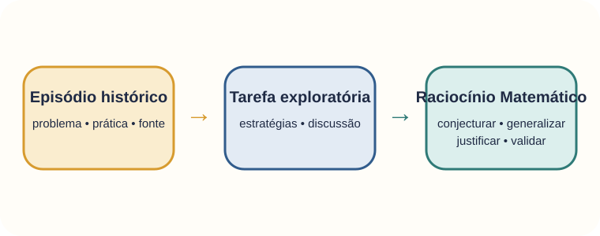
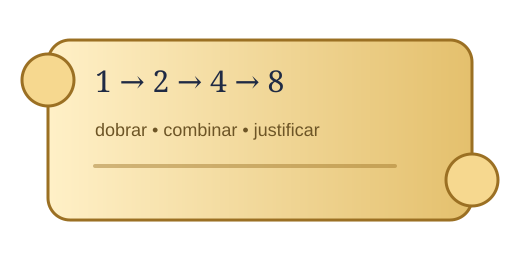

A História da Matemática integra a organização do ensino quando é articulada aos objetivos matemáticos.
A História da Matemática não se reduz à apresentação de datas, biografias ou curiosidades. Seu potencial pedagógico está relacionado à reorganização de conhecimentos historicamente produzidos em situações de aprendizagem que possibilitem aos estudantes investigar problemas, comparar procedimentos e construir significados matemáticos (Miguel & Miorim, 2011; Mendes, 2017).

Produzir novas conclusões a partir de informações conhecidas, de forma fundamentada
O RM é compreendido como um processo que envolve inferência, comunicação, argumentação, validação e produção de significados. Na dissertação, sua análise considera tipos de raciocínio e processos mobilizados durante a atividade matemática.
Raciocínio abdutivo
Relaciona-se à formulação de hipóteses explicativas e à elaboração de possíveis estratégias diante de uma situação matemática.
Raciocínio indutivo
Envolve inferir uma regra ou relação mais geral a partir da observação de regularidades em casos particulares.
Raciocínio dedutivo
Relaciona-se à obtenção e validação de conclusões a partir de afirmações, propriedades e regras de inferência assumidas como válidas.
Conjecturar, generalizar, justificar e validar
Conjecturar envolve formular hipóteses ou estratégias; generalizar consiste em reconhecer relações que podem ser ampliadas; justificar implica apresentar razões que sustentem uma afirmação; e validar corresponde ao exame da consistência das estratégias e conclusões produzidas (Ponte, Quaresma & Mata-Pereira, 2020; Araman & Serrazina, 2020).
Uma sequência didática organizada para o trabalho no 5º ano
O produto reúne tarefas com contexto histórico apresentado em História em Quadrinhos, objetivos de aprendizagem, orientações para o professor, possíveis encaminhamentos e relações com o desenvolvimento do Raciocínio Matemático.
Conhecer a tarefa analisada